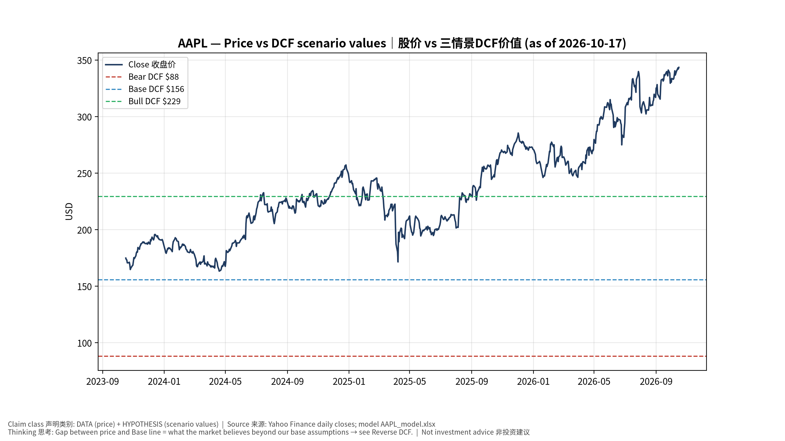
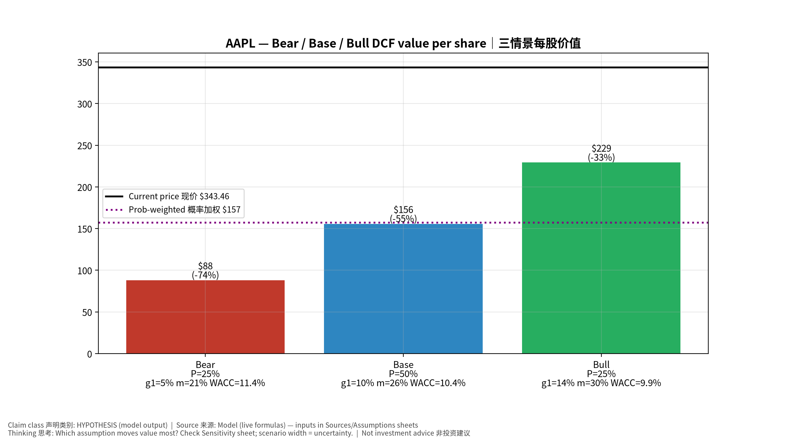
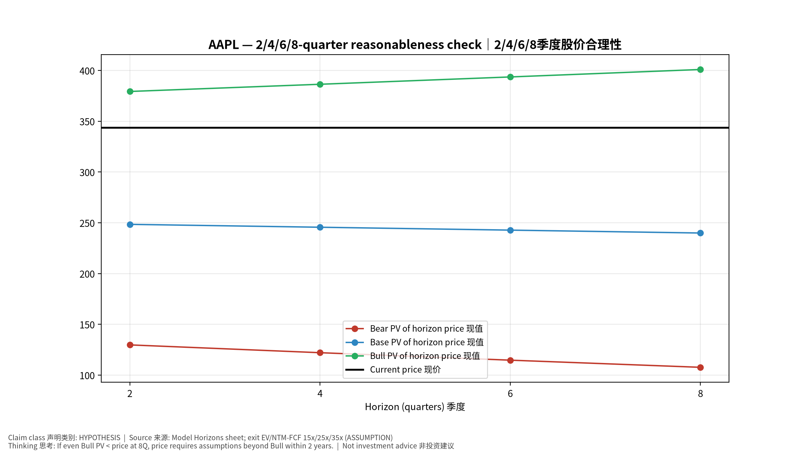
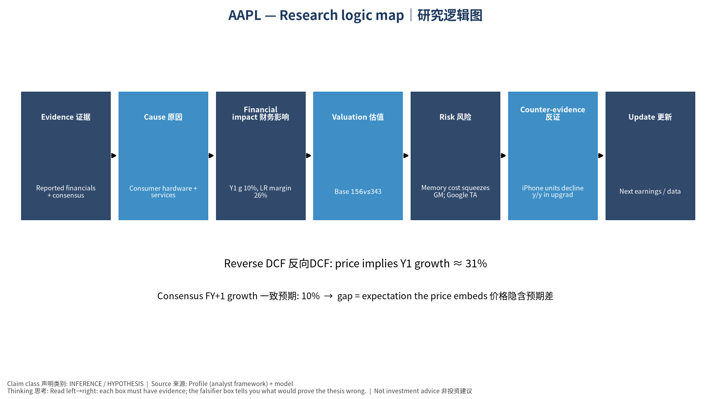

数据截至 2026-10-17 07:55 SGT｜价格 $343.46｜市值 5,012.5 bn USD｜财报货币 USD｜非投资建议。事实=CONFIRMED/DATA；推断=INFERENCE；假设=ASSUMPTION/HYPOTHESIS。
苹果是高质量现金流+回购的复利机器；AI(Apple Intelligence)换机周期是主要上行变量，存储成本上涨与服务业务监管是主要压力。
| 季度 | 收入 | 毛利 | 营业利润 | 净利润 | FCF | 营业利润率 |
|---|---|---|---|---|---|---|
| 2026-06-30 | 109.4 bn USD | 54.8 bn USD | 35.7 bn USD | 29.8 bn USD | 31.9 bn USD | 32.6% |
| 2026-03-31 | 111.2 bn USD | 54.8 bn USD | 35.9 bn USD | 29.6 bn USD | 26.7 bn USD | 32.3% |
| 2025-12-31 | 143.8 bn USD | 69.2 bn USD | 50.9 bn USD | 42.1 bn USD | 51.6 bn USD | 35.4% |
| 2025-09-30 | 102.5 bn USD | 48.3 bn USD | 32.4 bn USD | 27.5 bn USD | 26.5 bn USD | 31.6% |
| 2025-06-30 | 94.0 bn USD | 43.7 bn USD | 28.2 bn USD | 23.4 bn USD | 24.4 bn USD | 30.0% |
资产负债: 现金 62.4 bn USD；总负债 84.3 bn USD；净现金 -21.9 bn USD。TTM FCF 136.7 bn USD（FCF率 29.3%）。
| 季度 | EPS实际 | EPS一致预期 | 超预期% |
|---|---|---|---|
| 2025-09-30 | 1.85 | 1.76993 | 0.0452 |
| 2025-12-31 | 2.84 | 2.6708 | 0.0634 |
| 2026-03-31 | 2.01 | 1.94275 | 0.0346 |
| 2026-06-30 | 2.02 | 1.89243 | 0.0674 |
| 期限 | 情景 | 期限价格现值 | 相对现价 |
|---|---|---|---|
| 2Q | Bear | $129.72 | -62.2% |
| 2Q | Base | $248.42 | -27.7% |
| 2Q | Bull | $379.28 | 10.4% |
| 4Q | Bear | $122.03 | -64.5% |
| 4Q | Base | $245.58 | -28.5% |
| 4Q | Bull | $386.37 | 12.5% |
| 6Q | Bear | $114.68 | -66.6% |
| 6Q | Base | $242.74 | -29.3% |
| 6Q | Bull | $393.58 | 14.6% |
| 8Q | Bear | $107.64 | -68.7% |
| 8Q | Base | $239.89 | -30.2% |
| 8Q | Bull | $400.92 | 16.7% |
| 现价隐含的 EV/NTM-FCF (Base 路径): | 期限 |
|---|---|
| 2Q | 32.8x |
| 4Q | 31.6x |
| 6Q | 30.4x |
| 8Q | 29.3x |
解读: 如果8季度后Base情景所需倍数仍远高于25x，说明价格依赖更远期的增长。
| 情景 | Y1增速 | 长期FCF率 | WACC | 永续g | 概率 | 每股价值 | 相对现价 |
|---|---|---|---|---|---|---|---|
| Bear | 5.2% | 20.8% | 11.4% | 2.5% | 25.0% | $88.19 | -74.3% |
| Base | 10.4% | 26.0% | 10.4% | 3.0% | 50.0% | $155.72 | -54.7% |
| Bull | 13.6% | 29.9% | 9.9% | 3.5% | 25.0% | $229.34 | -33.2% |
概率加权价值 $157.24（相对现价 -54.2%）。
DCF Base: EV 2,294.6 bn USD；终值占比 51.8%。
Reverse DCF 反向DCF: 在Base利润率与WACC下，现价隐含Y1收入增速 ≈ 31.1%；一致预期FY+1增速 10.4%。
WACC (CAPM) = rf 5.1% + β 1.07 × ERP 5.0% = 10.4%。
SOTP segments 分部: iPhone; Services 服务; Mac; iPad; Wearables/Home 可穿戴. Status: framework only — segment revenues are INPUT REQUIRED from the latest 10-K/10-Q segment note (not auto-fed, left blank to avoid fabrication)｜分部收入需按最新财报手动录入，未自动填充以避免编造。
同业比较 Comps (DATA): | Ticker | 市值 | EV/Sales | Fwd P/E | 收入增速 | 毛利率 | FCF收益率 | |—|—|—|—|—|—|—| | AAPL | 5,012.5 bn USD | 10.8x | 35.9x | 16.4% | 48.7% | 2.7% | | MSFT | 3,928.5 bn USD | 12.0x | 22.3x | 17.7% | 67.9% | 0.4% | | GOOGL | 4,165.4 bn USD | 9.1x | 22.3x | 24.2% | 60.9% | 0.5% | | 005930.KS | 1,403,319.4 bn USD | 2.6x | 3.0x | 130.0% | 57.5% | 5.0% |
敏感度: 见Excel Sensitivity 表 (WACC ×
永续增长率)。
| Item | Value | Source/time |
|---|---|---|
| Price 股价 | 343.5 | Yahoo Finance quote, fetched 2026-10-17T07:55 SGT |
| Market cap 市值 | 5.013e+12 | Yahoo info.marketCap 2026-10-17T07:55 |
| Cash 现金 | 6.24e+10 | Yahoo info.totalCash (latest filing) 2026-10-17T07:55 |
| Debt 负债 | 8.434e+10 | Yahoo info.totalDebt (latest filing) 2026-10-17T07:55 |
| Revenue TTM 收入 | 4.668e+11 | Yahoo info.totalRevenue (TTM, USD) 2026-10-17T07:55 |
| FCF TTM 自由现金流 | 1.367e+11 | Sum of last 4 quarterly FCF (q_cash); quarters [‘2026-06-30’, ‘2026-03-31’, ‘2025-12-31’, ‘2025-09-30’] (USD) |
| Beta | 1.069 | Yahoo info.beta (5Y monthly) |
| Risk-free 10Y 无风险利率 | 0.051 | FRED DGS10 2026-10-15 |
| FX USD per USD | 1 | n/a (USD) |
| Consensus rev growth FY0 | 0.1491 | Yahoo revenue_estimate 0y |
| Consensus rev growth FY+1 | 0.1043 | Yahoo revenue_estimate +1y |
| Assumption | Value | Rationale |
|---|---|---|
| ERP 股权风险溢价 | 0.05 | ASSUMPTION: 5.0% house mature-market ERP |
| Beta clamp | [0.8,1.6] → 1.07 | ASSUMPTION: limit extreme betas |
| Tax rate (ROIC) | 0.18 | ASSUMPTION: blended cash tax 18% |
| Year-1 growth (Base) | 0.1043 | Consensus FY+1 revenue growth (Yahoo revenue_estimate ‘+1y’); capped at 100% |
| Growth fade | linear Y1→terminal by Y10 | ASSUMPTION |
| Starting FCF margin | 0.2928 | DATA: FCF TTM / Revenue TTM, floored -50% |
| Long-run FCF margin (Base) | 0.26 | ASSUMPTION (analyst framework, reached by Y5; see profile) |
| Bear/Bull Y1 growth multiplier | 0.5x / 1.3x | ASSUMPTION |
| Bear/Bull margin multiplier | 0.8x / 1.15x | ASSUMPTION |
| WACC adj Bear/Bull | +1.0pp / -0.5pp | ASSUMPTION |
| Terminal g Bear/Base/Bull | 2.5% / 3.0% / 3.5% | ASSUMPTION |
| Scenario probabilities | 25% / 50% / 25% | ASSUMPTION |
| Horizon exit EV/NTM-FCF Bear/Base/Bull | 15x / 25x / 35x | ASSUMPTION |
| Per-share conversion | value × fx ÷ market cap × price | METHOD: avoids ADR/share-class mismatch |
AAPL_model_v20261017-0755.xlsx (live
formulas; sheets
Inputs→Scenarios→DCF→ReverseDCF→Sensitivity→Horizons→SOTP→Comps→ROIC_WACC→History→Sources→Assumptions)production/pipeline/model.py (Python mirror;
values in this report = Python mirror, verified against LibreOffice
recalculation of the xlsx)data/snapshots/20261017-0755 (immutable)
| Fetched 2026-10-17 07:55 SGT | Generated 2026-10-17 07:56 SGT
股价vs三情景价值 Price vs scenario values
季度财务 Quarterly financials

三情景 Scenarios

2/4/6/8季度检验 Horizon check

研究逻辑图 Logic map
Data as of 2026-10-17 07:55 SGT | Price $343.46 | Mkt cap 5,012.5 bn USD | Reporting currency USD | Not investment advice.
Apple is a high-quality cash-flow and buyback compounder; an AI-driven upgrade cycle is the main upside variable, while memory-cost inflation and services regulation are the main pressures.
| Quarter | Revenue | Gross profit | Op income | Net income | FCF | Op margin |
|---|---|---|---|---|---|---|
| 2026-06-30 | 109.4 bn USD | 54.8 bn USD | 35.7 bn USD | 29.8 bn USD | 31.9 bn USD | 32.6% |
| 2026-03-31 | 111.2 bn USD | 54.8 bn USD | 35.9 bn USD | 29.6 bn USD | 26.7 bn USD | 32.3% |
| 2025-12-31 | 143.8 bn USD | 69.2 bn USD | 50.9 bn USD | 42.1 bn USD | 51.6 bn USD | 35.4% |
| 2025-09-30 | 102.5 bn USD | 48.3 bn USD | 32.4 bn USD | 27.5 bn USD | 26.5 bn USD | 31.6% |
| 2025-06-30 | 94.0 bn USD | 43.7 bn USD | 28.2 bn USD | 23.4 bn USD | 24.4 bn USD | 30.0% |
Cash 62.4 bn USD; debt 84.3 bn USD; TTM FCF 136.7 bn USD (FCF margin 29.3%).
| Quarter | EPS actual | EPS consensus | Surprise |
|---|---|---|---|
| 2025-09-30 | 1.85 | 1.76993 | 0.0452 |
| 2025-12-31 | 2.84 | 2.6708 | 0.0634 |
| 2026-03-31 | 2.01 | 1.94275 | 0.0346 |
| 2026-06-30 | 2.02 | 1.89243 | 0.0674 |
| Horizon | Scenario | PV of horizon price | vs current |
|---|---|---|---|
| 2Q | Bear | $129.72 | -62.2% |
| 2Q | Base | $248.42 | -27.7% |
| 2Q | Bull | $379.28 | 10.4% |
| 4Q | Bear | $122.03 | -64.5% |
| 4Q | Base | $245.58 | -28.5% |
| 4Q | Bull | $386.37 | 12.5% |
| 6Q | Bear | $114.68 | -66.6% |
| 6Q | Base | $242.74 | -29.3% |
| 6Q | Bull | $393.58 | 14.6% |
| 8Q | Bear | $107.64 | -68.7% |
| 8Q | Base | $239.89 | -30.2% |
| 8Q | Bull | $400.92 | 16.7% |
| Current-price implied EV/NTM-FCF on Base path: | Horizon |
|---|---|
| 2Q | 32.8x |
| 4Q | 31.6x |
| 6Q | 30.4x |
| 8Q | 29.3x |
| Scenario | Y1 growth | LR FCF margin | WACC | Terminal g | Prob. | Value/share | vs price |
|---|---|---|---|---|---|---|---|
| Bear | 5.2% | 20.8% | 11.4% | 2.5% | 25.0% | $88.19 | -74.3% |
| Base | 10.4% | 26.0% | 10.4% | 3.0% | 50.0% | $155.72 | -54.7% |
| Bull | 13.6% | 29.9% | 9.9% | 3.5% | 25.0% | $229.34 | -33.2% |
Probability-weighted value $157.24 (-54.2% vs price).
Comps.Sensitivity (WACC × terminal
g).Memory cost squeezes GM; Google TAC payment ruling; China share loss｜存储成本压毛利；谷歌分成裁决；中国份额流失 | Falsifiers: iPhone units decline y/y in upgrade cycle; services growth <10%; GM guide down｜换机年iPhone仍同比下滑；服务增速<10%；毛利指引下调
See tables above (shared, bilingual). - Model file:
AAPL_model_v20261017-0755.xlsx (live formulas; sheets
Inputs→Scenarios→DCF→ReverseDCF→Sensitivity→Horizons→SOTP→Comps→ROIC_WACC→History→Sources→Assumptions)
- Engine: production/pipeline/model.py (Python mirror;
values in this report = Python mirror, verified against LibreOffice
recalculation of the xlsx) - Data snapshot:
data/snapshots/20261017-0755 (immutable) | Fetched
2026-10-17 07:55 SGT | Generated 2026-10-17 07:56 SGT - Version:
v20261017-0755. Prior versions are never overwritten (see company
history page).